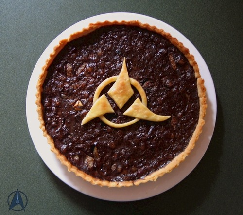
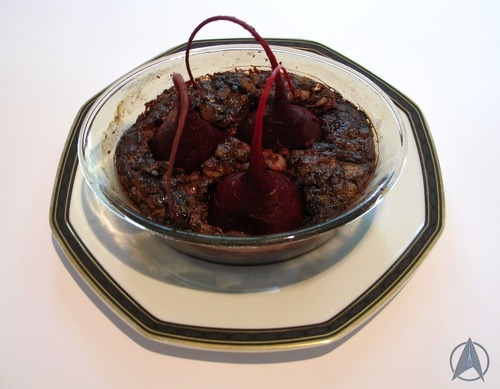

Rokeg Blood Pie

Description
So let’s get one thing straight. Rokeg Blood Pie, in my opinion, should be made with…blood. None of this raspberry puree stuff.
I just can’t imagine a bunch of battle-weary Klingons sitting down to a delicate raspberry pie as part of a main meal.
Blood, on the other hand, has all sorts of iron-enhancing properties which I am sure is good for preparing for battle.
Ingredients
- 600ml / 20 fl oz pig’s blood
- 150ml / 5 fl oz heavy cream
- 280g / 10oz pork back fat, finely diced
- 280g / 10oz onions, finely diced
- 2 tablespoons rolled oats
- 1 tablespoon salt
- ½ tablespoon smoked paprika
- ½ tablespoon sweet paprika
- ½ tablespoon nutmeg
- ½ tablespoon white pepper
- ½ tablespoon chili flakes (optional)
- 3 small beetroots with long roots (if preparing the pie to look like it does on The Next Generation)
- 180g / 6 1/3oz butter, at room temperature
- 240g / 81/2oz flour
- 1-2 tablespoons ice water
Steps
- Preheat the oven to 180°C / 350°F.
- Start by making the pastry (if using). Rub the flour and butter together in a bowl until the mixture resembles breadcrumbs.
Add a tablespoon of ice water and bring the mixture together into a ball. Add the second tablespoon of water if needed.
Wrap the dough in plastic wrap and refrigerate until needed.
- For the filling:
Start by cooking the onions until soft, and then add the diced pork fat. Cook for a few minutes until the fat turns slightly translucent,
then remove from the heat and let cool.
- Put the blood in a blender and blend for a couple of minutes to break it up, then strain into a bowl, to remove any clots.
To the blood, add the cooled pieces of fat and onions, cream and the oats and spices. Stir well to combine.
- Roll out the pastry and place onto a tart or pie pan. Cover with aluminum foil and add pie weights, coins or dried beans as weights.
Bake for about 15 minutes, until it begins to brown.
- Remove the foil and the weights, and immediately add the blood mixture. Make sure you stir it, so any bits that have fallen to the bottom are remixed.
I find it easiest to use a soup ladle and ladle it in to the pie shell.
- Bake for about 30-40 minutes, or until the mixture is firm to the touch and a dark bown colour.
If desired, add any scraps of pastry to the top in a lattice or other design. Return to the oven and bake for a further 5 minutes to brown the pastry.
- If you want to make the version as it appeared on TNG, boil your beetroots for about 20 minutes, so they are starting to soften but not completely soft.
Make the filling as described above, then pour into a glass bowl. Insert the beetroots in the top, and bake for 30-40 minutes until the mixture is firm to the touch.
Serve to your Klingon High Council and be assured that honour is satisfied.
